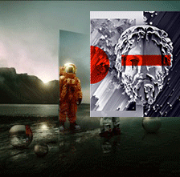
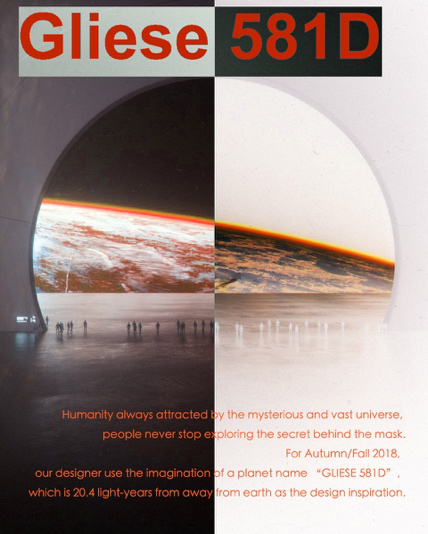
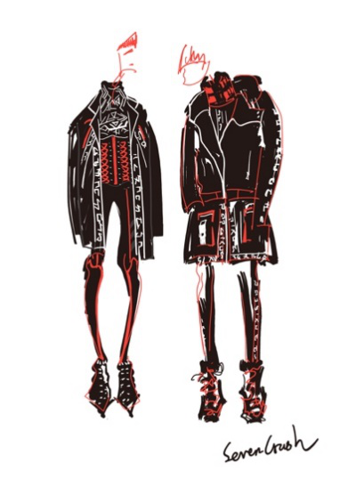
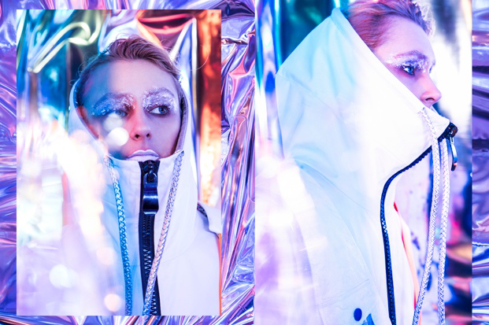

未来主义在2018秋冬风头正劲，众多大牌设计师在秋冬服装设计中通过使用大量彰显未来科技感的元素来表达此主题。

Seven Crash始终行走在时尚潮流前端，2018秋冬季，设计师将未来主义的想象空间拉至距离地球20.4光年的星球，将此星球命名为“Gliese 581 D”，同时也以星球名称作为本季的服装主题。

宇宙之内除了地球，其他星球有着怎样的光景？
还未探知的星球内是否真的存在着外星未知生物？
是否与莫测高深的太空之间有着神秘的连接？
设计师通过服装演绎Gliese 581 D风格的过程中，脑海里不断浮现设计灵感，为创造更多跨时代内容，他们不断碰撞、撕裂、交融……：
我们以人体为媒介，想象与外星未知生物的连结，那个充满着科技元素与图腾符号的神秘国度，与那些催化人类探索宇宙的好奇心…人类探索宇宙的过程是充满理想的、前卫的且带着反骨…
重重灵感的撞击，将关于Gliese 581 D的认知元素无数次打破、融合与重构，一种充满视觉冲击力的未来主义风格应运而生。
这就是2018秋冬的Gliese 581 D主题系列。
本季服装选材上大量采用充满太空感的涂层、肌理感及挺括御寒的网眼面料，廓形上透过夸张宽大、机械感、几何切割拼贴等营造出超强的视觉表现力，细节上以功能性的立体袋、插扣、夸张的树脂拉链、亮色嵌条与衍线、粗犷的尼龙带等点缀，印绣花工艺则以抽象几何图腾的方式呈现，以钉珠、铆钉刺绣等重工元素融入图像细节。

设计师心中的Gliese 581 D星球里，人们的穿着带着一些蒸汽朋克(Steam Punk)的元素。将未来感与实穿性时装相结合，希望借此说明人们进入太空探索的最终还是自己的内心。所谓的神秘并不产生自未知的外部空间，而是来自人类的存在本身。

Seven Crash Brand Concept:
Seven Crash，源自于美国纽约，是一个以东海岸风为核心，继承了East Coast的年轻一代崇尚自由生长，以擅长突破刻板造型与传统穿着来定义个人风格的时尚态度，并由此来传达品牌中“打破桎梏，挑战自我”的核心理念。
“Crash”代表“冲击”，意味着突破既定框架，赋予品牌“坚定”“激情”“力量”的精神。而7–Seven，是品牌汲取了西方文化中上帝用7天开天辟地创造世界的故事，作为神秘元素的象征在品牌的设计中体现。结合两者就是Seven Crash的两大主题系列。
“先锋系列”（Fashion Pioneer），系列紧跟时尚前端潮流，结合East Coast Urban Street亚文化中的时尚、艺术、音乐和运动等先锋元素，与品牌精神巧妙融合重组，创造各种
搭配，层穿风格的可能。
“神秘系列”（Mysticism），相对先锋系列显得更为成熟，强调神秘的酷感。风格大胆叛逆，充斥着独特的图腾及各类字符，代表着向过去文明的探索，继而传达了远古文化的沉淀。
两个系列相对的碰撞正是在表达品牌核心精神：致力于在不同风格与文化中不断突破边界，穿梭过去与未来，进行各种新的尝试，创造更多的可能，传达新一代潮人们“Crash The Rules”的自我体现与个人追求。
Seven Crash始终坚持不断突破桎梏，不断尝试突破设计边界。Crash The Rules，以永不禁锢的设计信仰，创造更多新鲜的时尚体验。